IN THIS ARTICLE
Grid-based Movement
Overview
This tutorial teaches you how to use device input to move entities on a grid. Additional sections of the tutorial introduce Script Canvas variables, event blocking with conditional checks, and creating smooth movement with linear interpolation.
| RUNLOOP Experience | Time to Complete | Feature Focus | Last Updated |
|---|---|---|---|
| Beginner | 20 Minutes | Input Bindings assets, Input component, Script Canvas component | December 9, 2022 |
What you will learn
In this tutorial, you will learn how to:
- Create an Input Bindings asset in Asset Editor that links input device signals to input events.
- Enable those input events in your level by adding an Input component and referencing an Input Bindings asset.
- Create a script with Script Canvas that listens for input events and moves an entity along a grid when they occur.
- Add smooth entity motion over time with linear interpolation.
- Add input event blocking while the entity is in motion.
Prerequisites
- Basic working knowledge of the Script Canvas Editor.
- A project built from the standard project template or one that contains the Gems in the standard template.
Steps
Prepare the scene
In this tutorial, you will modify several child entities of the Atom Default Environment, namely, the Shader Ball, Grid, and Camera. The grid will represent a grid or tile-based terrain that the Shader Ball moves on. You will attach the camera to the Shader Ball so that the camera follows its movements on the grid.
In a new level, select the Grid entity in Entity Outliner. In Entity Inspector, set the Grid component’s Primary Grid Spacing to
5 meters. Set the Secondary Grid Spacing to1 meterand Secondary Color to white,255, 255, 255so that the grid spacing is more visible.Select the Shader Ball in Entity Outliner. Currently, it is located at the intersection of four grid spaces and is too large to fit within a single space. In Entity Inspector, set Transform component’s Uniform Scale to
0.5. Set the Translate value toX: 0.5, Y: 0.5, Z: 0.0; the Shader Ball should now fit within a single grid space. Remove all rotations from it by setting Rotate toX: 0.0, Y: 0.0, Z: 0.0.Select the Camera in Entity Outliner, left-click and drag it over the Shader Ball entity and release it to attach the camera as a child entity of the Shader Ball. In Entity Inspector, set the Transform component’s Translate value to
X: 0.0, Y: -4.0, Z: 5.0and the Rotate value toX: -45.0, Y: 0.0, Z: 0.0. As a child entity of the Shader Ball, the camera’s translation and rotation are relative to its parent; the camera will be positioned behind the Shader Ball and looking down on it. The Fly Camera Input component currently attached to this entity will interfere with the input events you create later. Right-click on the Fly Camera Input component in Entity Inspector and choose Delete component.
The following image shows the scene layout after completing these steps.
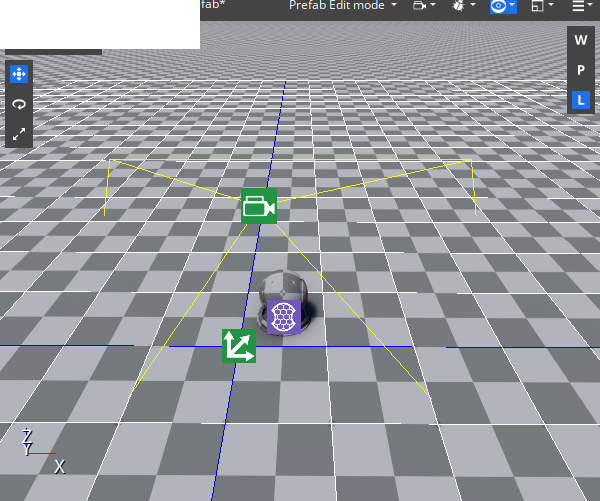
Create an Input Bindings asset
Next, you will create an Input Bindings asset that links input device event generators to input events. In this tutorial, you will use the keyboard’s W, A, S, and D keys to generate two input events that will move the Shader Ball on the X and Y-axis of the grid.
Open Asset Editor from the RUNLOOP Editor Tools menu. In the Asset Editor File menu, choose New and then select Input Bindings to create a new Input Bindings asset.
Left-click the next to Input Event Groups twice to add two new input events.
In the new events’ Event Name property, name the first event
MoveYand the secondMoveX. You will need to remember these event names when you begin to script the Shader Ball’s movement.Left-click the next to Event Generators to add a generator to an event. Add two event generators to each event. In the Class to create dialog box that appears, choose the second option, InputEventMap.
Set each of the four generators’ Input Device Type to keyboard.
For the
MoveYevent, set the Input Name for the event generators to keyboard_key_alphanumeric_W and keyboard_key_alphanumeric_S. For theMoveXevent, set the Input Name for the event generators to keyboard_key_alphanumeric_D and keyboard_key_alphanumeric_A.Change the Event value multiplier of the
SandAkeys to-1.0as this will correspond to a movement in the negative direction of the X and Y-axis. You can leave the Event value multiplier of theWandDkeys at their default value of1.0. This corresponds to a movement in the positive direction on the X and Y-axis. It can be advantageous to use Event value multipliers to reduce the number of events you use, and it can simplify the scripting that handling the events requires.Save the Input Bindings asset in your project’s directory as
grid-based-movement.inputbindings.
The following image shows the completed Input Bindings asset in the Asset Editor.
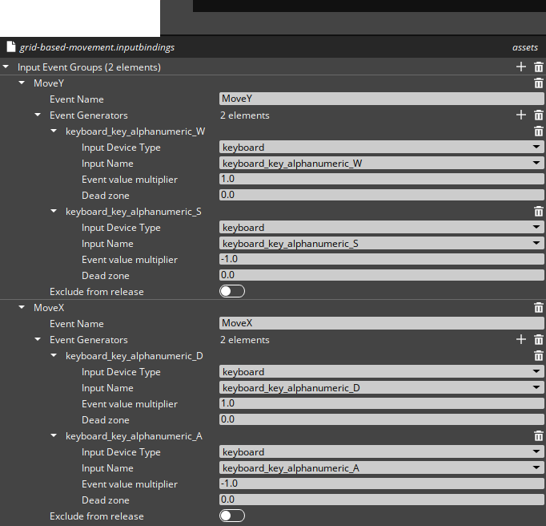
Add the Input component
Next, you will add an Input component and reference the Input Bindings asset you created.
Select the Shader Ball in Entity Outliner. In Entity Inspector, add an Input component to the Shader Ball.
In the Input component, left-click the button next to the Input to event bindings property and select the Input Bindings asset you created.
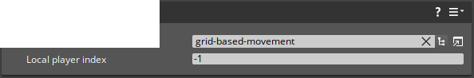
Note:You can attach Input components to any active entity in a level; if an Input Bindings asset is referenced, all entities in the level can receive and handle its events.
Create a script with Script Canvas
Next, you will create a script that handles the MoveX and MoveY input events and moves the Shader Ball according to the event received and the event’s value.
Select the Shader Ball in Entity Outliner. In Entity Inspector, add a Script Canvas component to the Shader Ball. On the new Script Canvas component, left-click the button to open Script Canvas Editor.
Add the On Graph Start node to a new graph. You can search for this node in the Note Palettte and drag it to the center of the editor to create a new graph. When you play a level in Game Mode, the On Graph Start node will execute a single time as soon as the Script Canvas component is active.
There must be one Input Handler node for each event that you want a graph to handle. Add two Input Handler nodes to the graph. In the Event Name fields, type the names of your events,
MoveXandMoveY. Connect the Out pin of the On Graph Start node to the Connect Event pin of the two Input Handler nodes. Now the nodes’ Pressed, Held, and Released slots will execute whenever the corresponding keyboard keys are pressed. When a key is pressed, you can capture and use the event’s value by connecting the value output slot to nodes in your graph.After connecting these nodes, your Script canvas graph should look like the following.
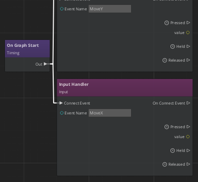
Add two From Values nodes to the graph from the Math > Vector3 category. You will use these nodes to create a
Vector3representing a single movement in one of the four grid directions. Connect the Pressed pin ofMoveY’s Input Handler to the In pin of one of the From Values nodes. Then, connect the value pin to the Y slot of that node.Connect the
MoveXInput Handler to the second From Values node in the same way, but this time connect the value pin to the X slot. When you press theAorDkeyboard keys , this node will output either(-1, 0, 0)or(1, 0, 0).To get the Shader Ball to move, you need to add a
Vector3to the ball’s current world translation and then set the Shader Ball’s translation to the result. Add two Get World Translation nodes to the graph and connect the Out pins of the From Values node to the In pins of the Get World Translation nodes.Note:The EntityID fields of these nodes are set toSelf; this means that when a node executes, it will return the translation of the entity that the Script Canvas graph is on. You simplify all Shader Ball-related references by attaching this graph to the Shader Ball.Next, you need to add the movement and translation vectors together. Add two Add (+) nodes from the Math category to the graph, and connect the Out pins of the Get World Translation nodes to the In pins of the Add (+) nodes. For each event, connect a Get World Translation Translation slot to Value 0 and the From Values Vector3 slot to Value 1. Now, when the Add (+) node executes, its Result slot represents the world translation that the Shader Ball should move to.
Add two Set World Translation nodes to the graph. Connect the Out pin of the Add (+) nodes to the In pins of the new nodes. Connect the Result pins to the World Translation slots. The Source slots of the Set World Translation nodes are set to
Self.After connecting these nodes, your Script canvas graph should look like the following.
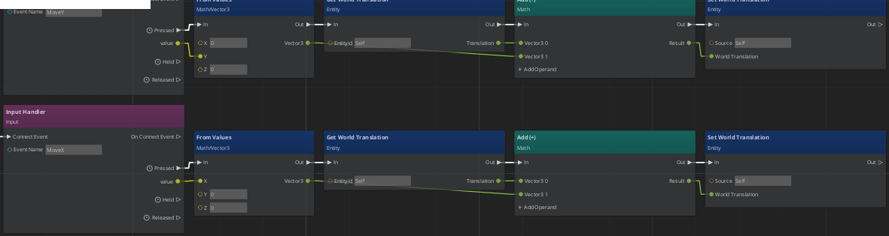
Save the Script Canvas graph in your project’s directory. In the Shader Ball’s Script Canvas component, left-click the button and choose the Script Canvas graph you created.
Save the level. Then, test that you have set up everything correctly by pressing Ctrl + G to enter Game Mode. You should be able to press W, A, S, and D to move the Shader Ball around the grid.
Simplify the graph with variables
Script Canvas variables simplify the visual complexity of a graph by replacing connections between nodes with references. Graphs may also require certain variables to execute correctly; the value of an output pin may only be valid for a limited time after a node’s execution. It is best practice to save values as a variable in order to reliably access them later. In this section, you will improve the Script Canvas graph you created previously in this tutorial by using variables.
If your Script Canvas graph is not already open in the Script Canvas editor, left-click the button on the Shader Ball’s Script Canvas component.
In the Variable Manager tool of the Script Canvas editor, choose Create Variable and select
Vector3from the dropdown list to create a newVector3variable. Name the new variableStart Location; it will represent the Shader Ball’s translation before it moves.Create two more
Vector3variables namedEnd LocationandMove Vector.After adding these variables, your Variable Manager should look like the following.
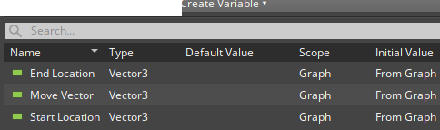
Remove all of the green
Vector3connections in your graph by selecting each connection and pressing Delete.If a slot is unconnected, you can make it a variable reference by double-clicking on the pin or right-clicking on it and selecting Convert to Reference. Convert all the
Vector3slots to references.Set the reference by dragging the appropriate variable from Variable Manager and dropping it the slot. Drag the
Move Vectorvariable to the Vector3 slot of both From Values nodes.Convert the remaining green
Vector3pins in the graph to use references and add the appropriate variable to them.After adding these variable references, your graph should look like the following.
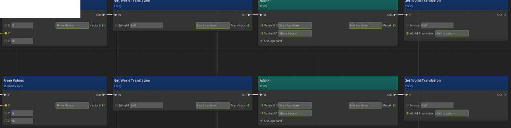
Create two new variables in Variable Manager of the
Numbertype for the input event values. Name themMoveY Input ValueandMoveX Input Value.Delete the yellow
Numberconnections between the Input Handler and From Values nodes. Convert the appropriate slots to use variable references and drag your new variables into them.Your graph should look like the following.
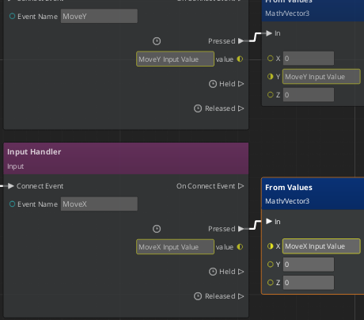
Save the graph and test your level.
Add smooth motion over time with the Lerp Between node
You may have noticed that it is difficult to see the instant movements of the Shader Ball. Now you will replace instant movement with smooth movement that happens over time using linear interpolation, or Lerp for short.
With your Script Canvas graph open, disconnect both of the Set World Translation nodes. To disconnect a node, you can delete its connections or Hold left-click on the node and shake it back and forth.
Add a single Lerp Between node from the Math category. Connect the Out pins from both Add (+) nodes to the In pin of the Lerp Between node.
Convert the Start and Stop slots to use a reference and drag and drop the
Start LocationandEnd Locationvariables to the appropriate slot.The value in the Maximum Duration slot will determine how long the movement between the start and end locations will take. Rather than hard code a value into the Maximum Duration slot, create a variable you can modify from the Script Canvas component. In Variable Manager, create a variable with the
Numbertype namedMove Duration. In the Node Inspector tool, set the Initial Value Source parameter toFrom Component.Your
Move Durationvariable should be set up like the following.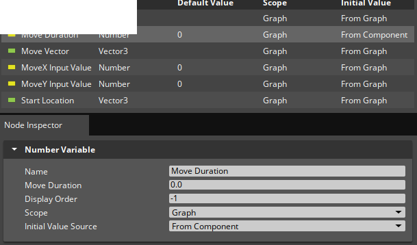
Convert the Maximum Duration slot to use a reference and set it to use the new
Move Durationvariable.Connect the Tick pin of the Lerp Between node to the In pin of the Set World Translation node. Then, connect the Step slot to World Translation; this should automatically remove the reference to
End Location. Now, while the Lerp Between node is executing, a new value for Step will be calculated, and the Set World Translation node will execute with this new value.Connect the Lerp Complete pin of the Lerp Between node to the In pin of the second Set World Translation node. The World Translation slot should still use the
End Locationvariable. It’s unlikely that the game ticks that occur during a Lerp add up perfectly to the Maximum Duration time. If you did not set the world translation of the Shader ball to the desiredEnd Locationafter every Lerp completed, small errors in the Shader Ball’s position would accumulate, and the Shader Ball would not perfectly align to the grid.Your graph should look like the following.
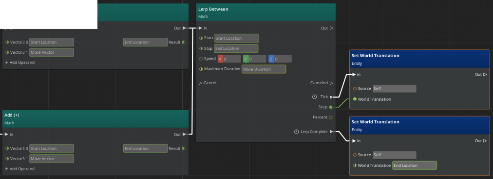
Save the graph and locate the Script Canvas component in the Shader Ball’s Entity Inspector.
The component’s Variables property should list
Move Durationas a variable. Change it to a positive value like1.0to set the duration of the movement Lerp. Variables set from the component are easy to modify; use them to quickly test and tune new values without the need to open Script Canvas.Save the level and test the Shader Ball’s movement.
Block input events
There is a problem with the Shader Ball’s movement! If you press a key to move the Shader ball before the last movement is complete, the Shader Ball will no longer align with the grid. You need to block new input events when the Shader Ball is moving.
In your Script Canvas graph, create a new
Booleantype variable and name itIs Moving. You’ll use this variable to track when the Shader Ball is moving. The default value for this variable isFalse, which is appropriate; when you enter Game Mode, the Shader Ball is not moving.Disconnect the From Values nodes from the Input Handler nodes. You need to insert a conditional check after input events are received.
Add two If nodes from the Logic category. Connect each of the Input Handler nodes to an If node, the Pressed pin should connect to the In pin of the If node.
Convert the Condition slots to use a reference and drag and drop the
Is Movingvariable on them. The If nodes have two output pins, only the pin with the same value asIs Movingwill execute. WhenIs MovingisTrue, you want to block additional movement, so the True pin should not connect to anything. WhenIs MovingisFalse, you want the movement logic to execute, so connect the False pin to the In slot of the From Values node.You also need to change the value of the
Is Movingvariable toTruewhen the movement logic begins to execute. Add two Set Is Moving nodes to the graph. You can find the node in the Node Palette tool, alternatively, hold Alt and left-click and drag theIs Movingvariable from Variable Manager. Insert these nodes on the connection between the If and From Values nodes by left-clicking and dragging the node and hovering the mouse over the connection.Left-click on the Boolean slot of the two Set Is Moving nodes so that the box is checked. This sets the value of
Is MovingtoTruewhen the node executes.Your graph should look like the following.
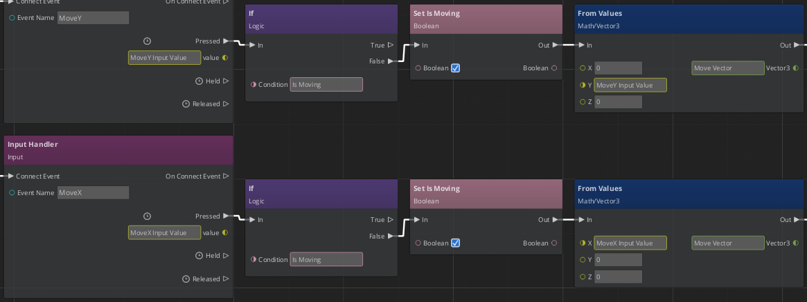
When a movement is complete, the
Is Movingvariable should be set toFalseso that the conditional check won’t block the next movement. Add a single Set Is Moving node to the graph and connect it to the final Set World Translation node that executes when a Lerp completes. The Boolean slot of Set Is Moving should be unchecked, which sets the variable toFalse.Your graph should look like the following.
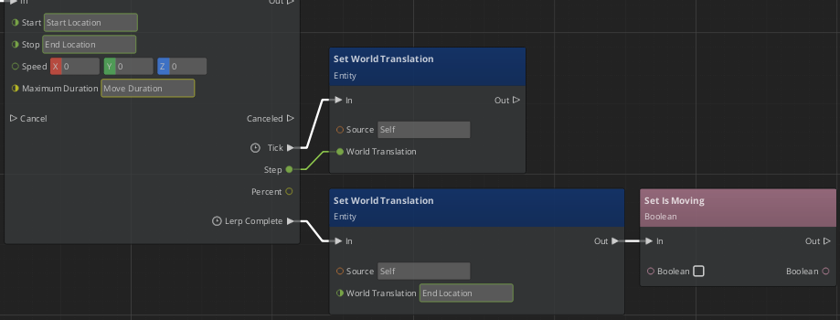
Save the graph and test your level. Now the Shader Ball cannot move until the last movement is complete, and it stays aligned with the grid.
Related resources
| Resource | Description |
|---|---|
| Using player input in RUNLOOP | User Guide topics related to input. |
| Creating gameplay and other behaviors with Script Canvas | User Guide topics related to Script Canvas. |
| Input component | Reference for the Input component. |
| Script Canvas component | Reference for the Script Canvas component. |